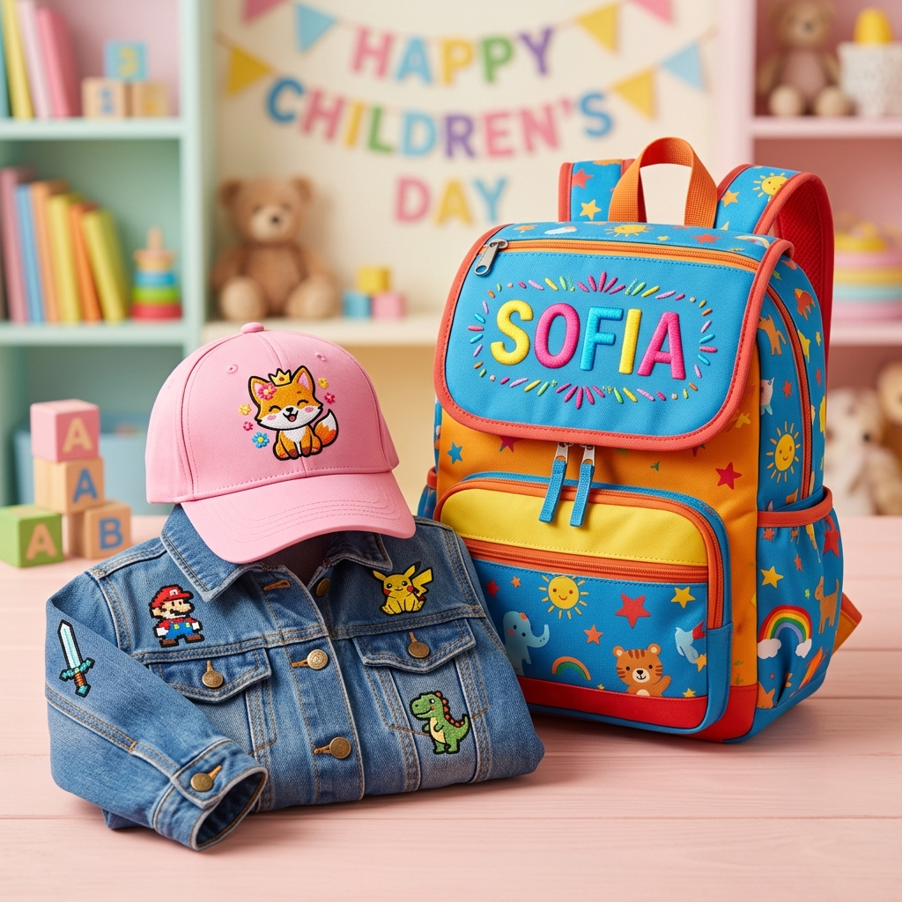

La magia de ver su nombre bordado en sus cosas
¿Recuerdas la cara de un niño cuando abre un regalo y descubre que tiene su nombre? No es solo un objeto más — es su objeto. Algo único, hecho especialmente para él o ella. Esa ilusión no tiene precio.
Ahora imagina esa emoción multiplicada: una mochila con su nombre en letras coloridas, una gorra con el logo de su videojuego favorito o un parche bordado de su caricatura preferida listo para pegar en su chamarra de mezclilla. Eso es exactamente lo que puedes regalar este Día del Niño con el bordado digital.
No es un regalo genérico que se olvida en una semana. Es algo que los niños usan todos los días con orgullo porque saben que fue pensado para ellos.
3 Ideas Estrella de Regalos Bordados para el Día del Niño
En Bortex Bordados trabajamos con máquinas de bordado industrial de alta precisión. Eso significa que cada diseño queda nítido, con colores vibrantes y una durabilidad que resiste el ritmo de vida de los niños. Aquí te van nuestras 3 ideas más solicitadas:
🎒 1. Mochilas y estuches bordados con su nombre
Este es el regalo más práctico y más querido por los papás. ¿Por qué? Porque además de ser un detalle personalizado y bonito, resuelve un problema real: que los niños no pierdan sus cosas en la escuela.
Bordamos el nombre del niño o la niña directamente sobre la mochila o el estuche escolar con hilos de alta densidad. El resultado es un bordado firme, elegante y completamente resistente al uso diario.
- Ideal para: Preescolar, primaria y secundaria.
- Opciones: Nombre completo, apodo, iniciales o nombre con un mini diseño decorativo (estrella, balón, corazón, mariposa).
- Colores: Ilimitados — elegimos los tonos que mejor combinen con la mochila.
🧢 2. Gorras personalizadas para el sol
Las gorras son un accesorio que los niños adoran usar. Y cuando tienen un diseño único hecho solo para ellos, no se la quieren quitar.
Podemos bordar su nombre, las iniciales de su equipo favorito, un número especial o un diseño completo en la parte frontal, lateral o trasera de la gorra. También hacemos bordado 3D (puff) para que el diseño se vea con relieve y textura profesional.
- Ideal para: Niños y niñas de todas las edades.
- Materiales: Trabajamos sobre gorras de algodón, poliéster, dryfit y más.
- Bonus: ¡También puedes regalar gorras iguales para papá e hijo! Un combo que se ve increíble.
🎮 3. Parches bordados de sus caricaturas o videojuegos favoritos
Esta idea es puro fuego para los niños que aman los personajes. ¿Tu hijo es fan de algún personaje de anime, de un videojuego o de una caricatura? Podemos convertir ese personaje en un parche bordado de alta definición listo para coser o planchar en su chamarra de mezclilla, su mochila o su estuche.
Los parches bordados son una forma increíble de que los niños expresen su personalidad en su ropa sin dañar las prendas. Se pueden quitar y cambiar cuando quieran uno nuevo.
- Tamaños: Desde 3 cm hasta 15 cm o más, según el diseño.
- Acabado: Borde merrowed (cosido) o cortado con calor para un look limpio.
- Personajes populares: Anime, videojuegos, superhéroes, deportes, mascotas, logos de equipos y más.
"Un regalo bordado no se despinta, no se pela, no se olvida. Se usa, se presume y se conserva."
¿Por Qué el Bordado de Máquina es Ideal para los Niños?
Muchos papás se preguntan: "¿Y si mi hijo es brusco con sus cosas? ¿Se va a arruinar el bordado?" La respuesta corta: no. Y aquí te explicamos por qué:
- Resiste el uso rudo: Los hilos industriales de poliéster que usamos están diseñados para soportar fricción constante, jalones y el desgaste diario de la escuela, el recreo y el juego.
- Aguanta las manchas: A diferencia de la impresión (serigrafía o sublimación), el bordado no se mancha ni absorbe líquidos. El hilo mantiene su integridad incluso con tierra, comida o pintura.
- Soporta lavadas constantes: Puedes meter la prenda bordada a la lavadora una y otra vez — el bordado no se despinta, no se cuartea y no se encoge. Esa es la gran diferencia entre bordar y estampar.
- No se pela con el sol: Los hilos de bordado industrial tienen resistencia UV. Los colores se mantienen vivos durante años, incluso con exposición solar frecuente.
- Textura premium: El bordado le da al diseño una dimensión táctil que los niños aman tocar. No es plano como una etiqueta — tiene volumen, relieve y carácter.
En resumen: el bordado digital es la opción más durable y resistente para personalizar las cosas de los niños. Es una inversión que dura lo que dure la prenda.
¿Cuánto Tiempo Tarda el Pedido?
Sabemos que el Día del Niño llega rápido. Por eso trabajamos con tiempos de entrega ágiles:
- Diseños sencillos (nombres, iniciales): 1–2 días hábiles.
- Diseños con personajes o logos: 2–4 días hábiles (incluye digitalización del diseño).
- Pedidos de varios artículos: Cotizamos tiempos según la cantidad. ¡Contáctanos con anticipación!
¿Cómo Pedir tu Regalo Bordado para el Día del Niño?
El proceso es muy sencillo:
- Paso 1: Mándanos por WhatsApp la imagen del personaje, nombre o diseño que quieres bordar.
- Paso 2: Te enviamos la cotización con opciones de prendas, colores y tamaños.
- Paso 3: Aprobamos el diseño digitalizado juntos.
- Paso 4: ¡Lo bordamos y te lo entregamos listo para regalar!
🎁 ¿Ya sabes qué personaje le gusta a tu hijo?
Mándanos la imagen por WhatsApp y te cotizamos el diseño bordado en menos de 24 horas. ¡Sorpréndelo este Día del Niño con un regalo que nadie más va a tener!
Cotizar por WhatsApp Cotizar en línea